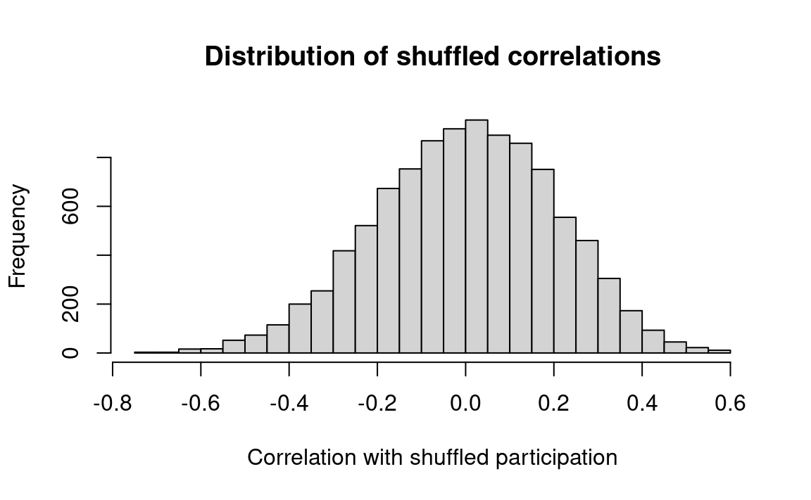
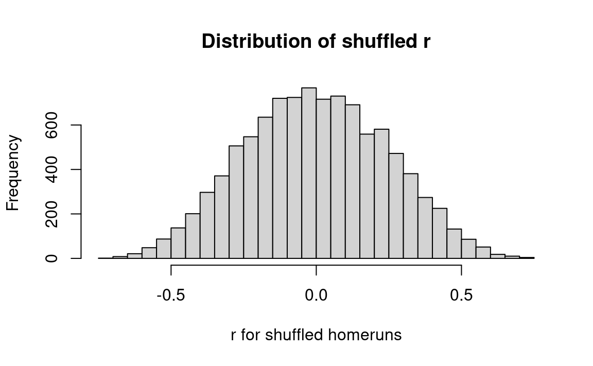
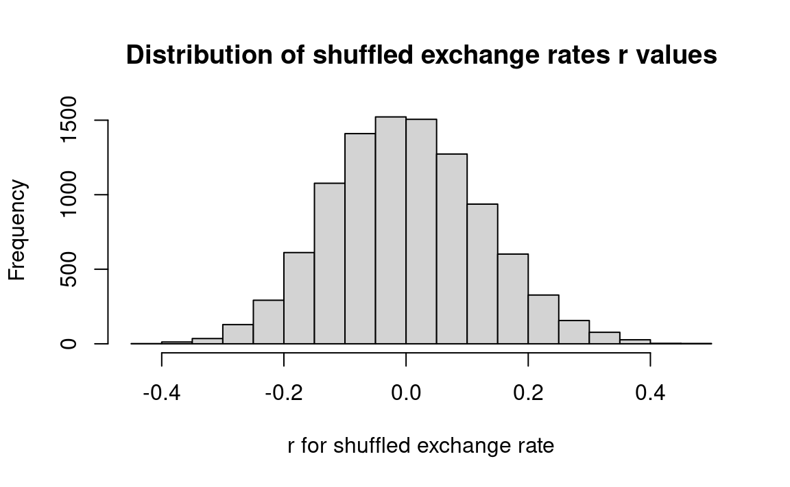

We suggested that you ignored the pairing of the before and after samples, and that is what we will do here. Then we will extend the treatment to take the pairing into account.
df <-read.csv('data/hamilton.csv')before <- df$score_beforeafter <- df$score_afterobserved_diff <-mean(after) -mean(before)# Let us start with a permutation test.both <-c(before, after)n_before <-length(before)# Samples in the null world.n_trials <-10000results <-numeric(n_trials)for (i in1:n_trials) { shuffled <-sample(both) fake_before <- shuffled[1:n_before] fake_after <- shuffled[(n_before +1):length(both)] fake_diff <-mean(fake_after) -mean(fake_before) results[i] <- fake_diff}# We are interested in fake differences that are larger# in magnitude than the observed difference (hence "abs").# Here we have no prior hypothesis about which direction the difference# will go.k <-sum(abs(results) >=abs(observed_diff))kk <- k / n_trialsmessage('Permutation p null-world abs >= abs observed: ', kk)
Permutation p null-world abs >= abs observed: 0.2472
# Next a bootstrap test.n_after <-length(after) # Of course, in our case, this will be == n_beforeresults <-numeric(n_trials)for (i in1:n_trials) { fake_before <-sample(both, size=n_before, replace=TRUE) fake_after <-sample(both, size=n_after, replace=TRUE) fake_diff <-mean(fake_after) -mean(fake_before) results[i] <- fake_diff}k <-sum(abs(results) >=abs(observed_diff))kk <- k / n_trialsmessage('Bootstrap p null-world abs >= abs observed: ', kk)
Bootstrap p null-world abs >= abs observed: 0.2173
Finally we consider the pairs. Here we do take the pairs into account. We have some reason to think that the patients or cars vary in some substantial way in their level of depression, or their tendency to break down, but we believe that the patients’ response to treatment or the difference between the mechanics is the value of interest.
In that case, we are interested in the differences between the pairs. In the null world, these before / after (mechanic A / mechanic B) differences are random. In the null-world, where there is no difference between before/after or mechanics 1 and 2, we can flip the before / after (A / B) pairs and be in the same world.
Notice that flipping the before / after or A / B in the pair just changes the sign of the difference.
So we will simulate the effect of flipping the values in the pair, by choosing a random sign for the pair, where -1 means pair is flipped, and 1 means pair is in original order. We recalculated the mean difference with these random signs (flips) applied, and these will be our values in the null-world.
# A test of paired difference with sign flips for the null world.differences <- after - beforeobserved_mdiff <-mean(differences)n_both <-length(differences)results <-numeric(n_trials)for (i in1:n_trials) {# Choose random signs to perform random flips of the pairs. signs <-sample(c(-1, 1), size=n_both, replace=TRUE)# Do flips. fake_differences <- signs * differences# Calculate mean difference and store result. results[i] <-mean(fake_differences)}k <-sum(abs(results) >=abs(observed_mdiff))kk <- k / n_trialsmessage('Sign-flip p null-world abs >= abs observed: ', kk)
Sign-flip p null-world abs >= abs observed: 0.0273
Notice that the sign-flip test, in which we preserve the information about the patients / cars, is much more convincing than the permutation or bootstrap tests above, where we choose to ignore that information.
This can occur when the values within the pairs (rows) are similar to each other, but less similar across different pairs (rows).
A sample of 20 batteries is tested, and the average lifetime is 28.85 months. Establish a 95 percent confidence interval for the true average value. The sample values (lifetimes in months) are listed below.
We use the “bootstrap” technique of drawing many bootstrap re-samples with replacement from the original sample, and observing how the re-sample means are distributed.
n_lifetimes <-length(lifetimes)results <-numeric(n_trials)for (i in1:n_trials) {# Draw 20 lifetimes from "lifetimes, randomly and with replacement. fake_lifetimes <-sample(lifetimes, size=n_lifetimes, replace=TRUE)# Find the average lifetime of the 20. fake_mean <-mean(fake_lifetimes)# Keep score. results[i] <- fake_mean}hist(results, breaks=25,main='Bootstrap distribution of mean battery lifetimes',xlab='Bootstrap mean battery lifetime')mean_limits <-quantile(results, c(0.025, 0.975))rounded <-round(mean_limits, 2)message('95% percent limits for mean lifetimes: ', rounded[1], ' ', rounded[2])
Derive a 95 percent confidence interval for the sample mean. Are there enough measurements to produce a satisfactory answer?
n_density <-length(density)n_trials <-10000results <-numeric(n_trials)for (i in1:n_trials) { fake_density <-sample(density, size=n_density, replace=TRUE) results[i] <-mean(fake_density)}hist(results, breaks=25,main='Bootstrap distribution of density means',xlab='Bootstrap density means')mean_limits <-quantile(results, c(0.025, 0.975))rounded <-round(mean_limits, 3)message('95% percent limits for density mean: ', rounded[1], ' ', rounded[2])
The observed correlation coefficient between voter participation and spread is moderate and negative. Is this more negative that what might occur by chance, if no correlation exists in some underlying population, from which this sample was taken?
Create two groups of paper cards: 25 with participation rates, and 25 with the spread values. Arrange the cards in pairs in accordance with the table, and compute the correlation coefficient between the shuffled participation and spread variables.
Shuffle one of the sets, say that with participation, and compute correlation between shuffled participation and spread.
Repeat step 2 many, say 1000, times. Compute the proportion of the trials in which correlation was at least as negative as that for the original data.
n_trials <-10000results <-numeric(n_trials)for (i in1:n_trials) {# Shuffle the participation rates. shuffled <-sample(participation)# Compute re-sampled correlation. fake_r <-cor(shuffled, spread)# Keep the value in the results. results[i] <- fake_r}hist(results, breaks=25,main='Distribution of shuffled correlations',xlab='Correlation with shuffled participation')# Count the trials when result <= observed.k <-sum(results <= actual_r)# Compute the proportion of such trials.kk <- k / n_trialsmessage('Proportion of shuffled r <= observed: ', round(kk, 2))
Proportion of shuffled r <= observed: 0.02

End of voter_participation_solution notebook
From this we may conclude that the voter participation rates probably are negatively related to the vote spread in the election. The actual value of the correlation (-.425) cannot be explained by chance alone. In our Monte Carlo simulation of the null-hypothesis a correlation that negative is found only about 3 percent of the time.
# The sum of products approach.actual_sop <-sum(homeruns * strikeout)n_trials <-10000results <-numeric(n_trials)for (i in1:n_trials) { shuffled_runs <-sample(homeruns) fake_sop <-sum(shuffled_runs * strikeout) results[i] <- fake_sop}hist(results, breaks=25,main='Distribution of shuffled sum of products',xlab='Sum of products for shuffled homeruns')k <-sum(results >= actual_sop)kk <- k / n_trialsmessage('p shuffled sum of products >= actual: ', round(kk, 3))
p shuffled sum of products >= actual: 0.003
Interpretation: In 10,000 simulations, random shuffling very rarely produced a value as high as observed. Therefore, we conclude that random chance could not reasonably be responsible for the observed degree of correlation.
Again, we are looking at the correlation of home runs and strikeouts for major-league baseball players. This time we will use the correlation coefficient (\(r\)) measure.
# The correlation approach.actual_r <-cor(homeruns, strikeout)n_trials <-10000results <-numeric(n_trials)for (i in1:n_trials) { shuffled_runs <-sample(homeruns) fake_r <-cor(shuffled_runs, strikeout) results[i] <- fake_r}hist(results, breaks=25,main='Distribution of shuffled r',xlab='r for shuffled homeruns')k <-sum(results >= actual_r)kk <- k / n_trialsmessage('p shuffled r >= actual: ', round(kk, 3))
p shuffled r >= actual: 0.002

Interpretation: a correlation coefficient as high as the observed value (.62) occurred only about 0.3% of the time by chance. Hence, provisionally, we choose to reject chance as an explanation for such a high value of the correlation coefficient.
Notice, we get the same answer for correlation coefficients as we do for sum of products. In fact, correlation coefficients must give us the same answer (apart from random variation from the permutation), as the tests of association are equivalent when we compare between different orderings of the same sequences.
n_trials <-10000results <-numeric(n_trials)for (i in1:n_trials) { shuffled_rates <-sample(exchange_rates) fake_r <-cor(shuffled_rates, money_supply) results[i] <- fake_r}hist(results, breaks=25,main='Distribution of shuffled exchange rates r values',xlab='r for shuffled exchange rate')k <-sum(results >= actual_r)kk <- k / n_trialsmessage('p shuffled r >= actual: ', round(kk, 3))
p shuffled r >= actual: 0

End of exchange_rates_solution notebook
Interpretation: The observed correlation (.42) between the exchange rate and the money supply is seldom exceeded by random experiments with these data. Thus, the observed result 0.42 cannot be reasonably explained by chance alone and we conclude that it is statistically surprising.